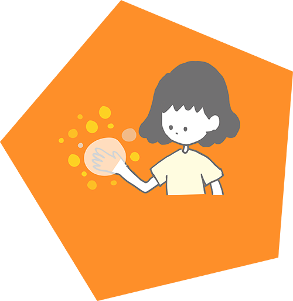

函館の複合文化施設を起点として、人の本能や好奇心を刺激するような新しい体験コンテンツを世界に向けて発信するプロジェクトです。
We are stimulating people’s curiosity and instincts. We do this by giving people new experiences using digital contents. We took the contents to culture complex. In addition, we announced our activities online.
私たちは人の本能や好奇心を刺激するような新しい体験コンテンツの提案、開発を行っています。ワークショップやディスプレイに映し出される体験型コンテンツなど様々な形のものを提案しています。
We create contents which stimulating people’s curiosity and instincts. We suggest various contents such as workshop, interactive digital contents.
シェアスタジア
Sharesthesia
シェアスタジアでは、言葉の木を作り上げることができます。言葉から感じる色は十人十色。このコンテンツから人との違いを感じてみましょう。
We can create a words tree in “sharesthesia”. Feelings are as many opinions as there are people. Let’s feel your personality.
- 
Powatto
Powattoでは、体験の中で自然と隣の人とふれあうことができます。手と手がふれた瞬間、あなたは何を感じるでしょうか。
we can touch each other naturally in “Pwatto”. The moment when the touch each other, What will you feel?
O-ra
O-raでは、あなたのオーラを見ることができます。普段見ることができない自分だけの特別な個性をこのコンテンツをみて感じてみましょう。
You can see your aura in O-ra. Let’s feel your personality which you could not see at usually.

KiraKira
この世界は、星をつかむことができ、それをつなげて星を作ることができます。星空の中であなただけの星座を生み出してみましょう。
You can catch stars and you can make constellations. Let’s make constellation which only yours.

へきめきょろた
Hekime Kyorota
なんとなく視線を感じる。日常に潜んでいる不思議やワクワクをもっと探してみましょう。毎日が少し楽しくなるかも。
I feel someone looking at me. Let’s find exciting things which hidden in the everyday life.
はこだま
Hakodama
これは一見空っぽのはこですが、実は見えない何かが入っています。新しい発見をする驚きと喜びを体験してみましょう。
This box seems empty box. But, it actually has something. Let’s feel surprise and pleasure which discover something.
その他のコンテンツ
Other contents
その他のコンテンツとして「Join Beat」「Crush Water」「Zootamp」「Wonder DooR」について紹介しています。
We introduce "Join Beat" "Crush Water" "Zootamp" "Wonder DooR" as other contents.
函館発新体験開発プロジェクトは明るく、個性豊かな10名で構成されています。時に個々の主張が強く、収集がつかないことがありますが、全員で協力して新体験の開発を行っています。
There are ten people in our project. We are so cheerful and unique. Sometimes become confused because of each of the claim. However, we create new experience together.


米原 楓
Kaede Yonehara
Yonehara Kaede
グラフィックデザイナー
イラストレーター
ワークショップ企画
Graphic Designer
Illustrator
Workshop Planner
プロジェクトメンバーで子どもの頃に遊んだことを話し合ったが山の中で育ったため唯一、共感することができなかった。親知らずを抜いた影響から引きつった笑顔しかできなくなってしまった。
She talked about having played in the days of a child in project members. But she was not able to sympathize alone because she was brought up in a mountain. She could only a smile drawn from the influence that pulled a wisdom tooth.

渓本 ひな
Hina Tanimoto
Tanimoto Hina
グラフィックデザイナー
ワークショップ企画
Graphic Designer
Workshop Planner
子どもが好き過ぎてなのか子どもみたいな行動をよく見かけ、愛想笑いじゃないのかっていうぐらいみんなに笑顔を振り撒いている。最近、スマートフォンのケースを変えた。
She likes children very much. Result of that, her’s action like the child.She lavish a smile on everybody so that it is said whether it is not a fake smile.She changed the case of the smartphone recently.
私たちは新体験の開発だけでなく、開発したコンテンツを様々な場所に出展しています。フィードバックから修正を繰り返し、より良いコンテンツにすることを目指しています。
Not only we create new experience, but also we display contents at various place. We aim for create good contents based on feedback and improvement.
はこだてみらい館展示
Exhibitions in Future Center Hakodate
「はこだてみらい館」で開催されている「まほうのゆうえんち」のコンテンツとして「O-ra」、「Powatto」、「シェアスタジア」、「へきめきょろた」を展示しました。「シェアスタジア」は土曜日と日曜日にグループメンバーがワークショップを実施しています。この展示は2017年2月25日まで開催しています。
We exhibited “O-ra”, ”Powatto”, “Sharesthesia”, “Hekime Kyorota” to “Amusement park of magic”. “sharesthesia” will hold workshop in Saturday and Sunday. This exhibition will hold until February 25th.
はこだてみらい館展示準備
Preparing exhibitions in Future Center Hakodate
「はこだてみらい館」にて、12月15日〜2月25日で開催される「まほうのゆうえんち」のコンテンツとして展示させていただくことが決定しました。コンテンツの設置や遊び方を説明したポスター等を制作し、展示に向けて準備を行いました。
Our contents were decided to be exhibited “Amusement park of magic” held in Future Center Hakodate in December 15th to February 25th. We got ready for that exhibition such as setting contents and posters written how to play.
プロジェクト最終発表
Last presentation of project learning
公立はこだて未来大学で行われているプロジェクト学習の最終発表会が行われました。6つのコンテンツが体験できるブースの設置、これまでの活動や成果をまとめたポスターを展示しました。学生や教員、大学外の方々に体験していただきました。アンケートにも答えていただき、多くのフィードバックを得ることができました。
An last presentation of project learning which held at Hakodate Hakodate Future University was carried out. We exhibited six contents. we also exhibited posters which about our activities. Our contents were experienced by many professors and students. We could get many feedback by questionnaires.
金沢工業大学の先生方来校
Professor of Kanazawa institute of Technology visited us
「金沢工業大学」の先生方が「函館発新体験開発プロジェクト」の活動を見学をするために来校されました。プロジェクト活動について率直な感想をいただくことできました。
Professor of Kanazawa institute of Technology visited us. We could get frank opinion about our project activities.
はこだてみらい館打ち合わせ
Held meeting in Future Center Hakodate
「はこだてみらい館」にて、展示を行うための打ち合わせを行いました。過去に行った展示の映像などを用いて開発したコンテンツを紹介し、みらい館での展示に一歩前進しました。
We did a meeting to display it in Future Center Hakodate. We introduced contents using a movie of past exhibition. And one step advanced for the exhibition in Future Center Hakodate.
児童館訪問
Visited children’s center
「赤川児童館」、「桔梗児童館」、「鍛治児童館」を訪問し、「シェアスタジア」、「Powatto」、「O-ra」を展示しました。多くの子どもたちに遊んでいただき、大変好評でした。
We visited Akagawa , Kikyou and Kaji children’s center. We exhibited sharesthesia, Powatto and O-ra each place. Many children played and so enjoyed.
Read more
ご意見やご感想、その他の質問等がありましたら下部のお問合せフォームからご連絡ください。
If there are an opinion and an impression, other questions, please contact me from an inquiry form of the lower part.